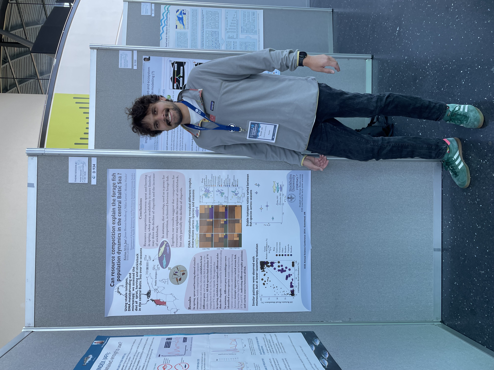

Working Project III
Limited resource use overlaps among small pelagic fish species in the central Baltic Sea
Small pelagic fish have a central position in pelagic food webs, linking plankton production to higher trophic levels. They often favour crustacean mesozooplankton and are thought to compete for the same resource, an assumption that relies on microscopy diet identification that neglects digested and soft-bodied prey. Here, we aimed to systematically identify the entire resource use and overlap among the dominant small pelagic fish in the central Baltic Sea at high taxonomy resolution. The diet composition of two clupeid species, herring (Clupea harengus) and sprat (Sprattus sprattus), and the three-spined stickleback (Gasterosteus aculeatus) were assessed in May and October using DNA metabarcoding, stable isotopes and microscopy. All three methods gave consistent results. The clupeids shared a similar diet in May when prey diversity is low, composed mainly of the copepods Pseudocalanus and Acartia, whereas three-spined stickleback favoured different copepod species and the rotifer Synchaeta, which was confirmed by a different isotopic value as compared to the two clupeids. In October, all forage fish preyed on diverse zooplankton species, mainly composed of the copepods Acartia, Eurytemora and Temora, while Pseudocalanus was only important for herring. The observed resource use partitioning between sprat and herring was confirmed by the stable isotope values from October, suggesting that different prey species were targeted during the summer period. Our study highlights that resource use overlaps among small pelagic fish was limited and varied with prey availability. This suggests that shifts in zooplankton dynamics, rather than competition for resources, has the potential to drive small pelagic fish population fluctuations.
The full article is available in open access: Jan, K.M.G., Hentati-Sundberg, J., Larson, N., Winder, M. Limited resource use overlaps among small pelagic fish species in the central Baltic Sea. ICES Journal of Marine Science (2025). doi:10.1093/icesjms/fsaf122
The data and the Rscripts are also publicly available on Zenodo. doi: 10.5281/zenodo.14886602.
A poster for this project was presented at the ICES Annual Science Conference 2024, September 2024, Gateshead, UK.
